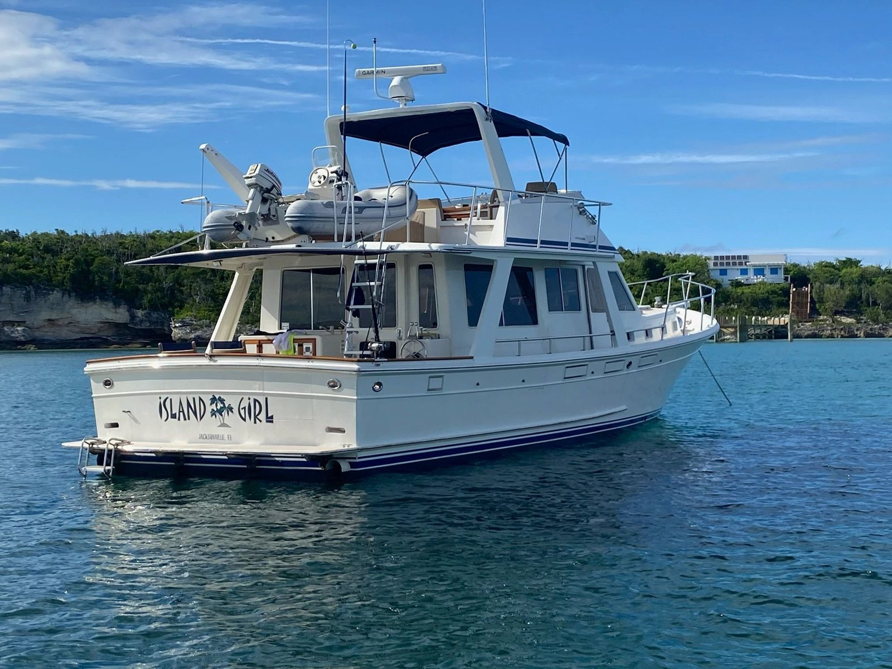

Island Girl is a 1997 Offshore Yachts Sedan, a semi-custom motoryacht from a yard whose reputation rests on one thing: motoryachts engineered to go offshore and stay comfortable doing it. Where most production boats this size are built for the marina and the occasional bay run, an Offshore is built to cross open water, ride a real sea with composure, and bring everyone aboard home easy. That pedigree does not fade with the model year. It is in the bones of the boat.
This is a yacht for the owner who wants distance without giving up the feeling of home. Inside, the joinery and finish are the kind that hold their value because they were done right the first time. Outside, she has the sea manners that let you pick a longer day, a farther anchorage, a real crossing, with the family aboard and confidence to spare.
| Year | 1997 |
| Builder | Offshore Yachts |
| Model | Sedan |
| LOA | 48 ft |
| Beam | 15 ft 6 in |
| Max draft | 4 ft 2 in |
| Dry weight | 48,000 lb |
| Hull | Semi-displacement w/ partial keel; solid FRP below WL, cored above |
| Location | Palm Beach Gardens, FL |
Twin Caterpillar 3126-TA diesel, 420 HP each, turbocharged and aftercooled. Installed January 2006, approximately 2,000 hours. Direct drive, roughly 2.00:1 reduction. Bronze 4-blade props (spare aboard). Dripless shaft seals.
2 staterooms / 2 heads. Forward master, port guest, shared shower to starboard. Salon galley-up. Teak and holly sole. Satin teak interior throughout.
KitchenAid 2-burner ceramic cooktop, Frigidaire microwave, undercounter refrigerator and freezer, stainless sink.
8kW Northern Lights generator (approximately 3,125 hours). NEW (5/2026) Victron MultiPlus-II inverter/charger. New batteries throughout (3/2026). Three Dometic reverse-cycle AC units (16,000 BTU each). Sleipner Side-Power bow thruster. SeaStar hydraulic steering. Bennett trim tabs.
Garmin GHC-10 autopilot, xHD2 open-array radar, GPSMap 5212 and 4208, XSV 12 chartplotter/fishfinder. Two Icom CommandMic VHF. Yaesu SSB. Fusion Apollo stereo with Klipsch speakers.
| Fuel | 600 gal (4 aluminum) |
| Water | 240 gal (2 stainless) |
| Hot water | 17 gal |
| Holding | Type III MSD |
Flybridge with Sunbrella bimini. Fiberglass radar arch. Full walk-around covered side decks with high bulwarks. Molded swim platform with starboard transom door. Cockpit wet bar with sink and hot/cold shower. Dinghy davit on the port boat deck. Maxwell VW1000 windlass with approximately 150 ft chain and 45 lb CQR.